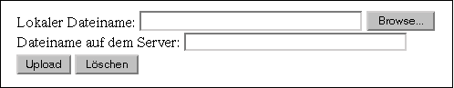
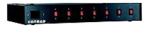
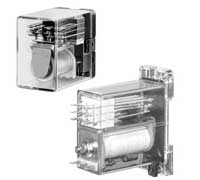
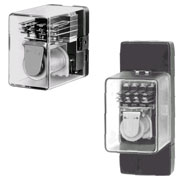

|
Internet-TechnologieProf. Jürgen Plateund Jög Holzmann |
|
Internet-TechnologieProf. Jürgen Plateund Jög Holzmann |
Man muß also Methoden finden, mit denen der Zustand zwischen mehreren Aufrufen des CGI-Programms erhalten bleibt, und die ein zustandsloses (stateless) Protokoll nutzen um ein zustandsbehaftetes (stateful) Protokoll darüber implementieren. Ein CGI-Programm selbst kann zunächst keinen Zustand halten. Wir wollen aber die mehrfache Ausführung eines CGI-Programms als ein virtuelles Programm auffassen, das bei jedem CGI-Aufruf in einen neuen Zustand übergeht.
Ein einfaches Beispiel:
Bei jedem Aufruf des CGI-Programms soll eine Zahl (Session-Kennung) angezeigt werden.
Diese Zahl ist bei jedem neuen Aufruf zu inkrementieren. Jeder Browser bzw. Benutzer
soll eine eigene Kennung besitzen, so daß es nicht ausreicht, einen globalen Zähler
serverseitig zu erhöhen.
Der Zähler repräsentiert den Session-Zustand. Diesen müssen wir jeweils zwischen zwei aufeinanderfolgenden Aufrufen des CCI-Programms erhalten. Da der Zustand pro Browser bzw. User gilt, muß dieser mehrfach gespeichert werden. Zur Speicherung des Zustands gibt es zwei Möglichkeiten:
Ein Vorteil der serverseitigen Speicherung ist, daß die gesamte Information über alle Clients sicher beim Server aufgehoben ist und auch analysiert werden kann. Positiv ist weiterhin, daß die Zustandsinformation nicht mehr komplett beim User gespeichert wird. Im Folgenden werden einige Möglichkeiten der Zustandsspeicherung vorgestellt.
http://www.netzmafia.de/cgi-bin/state.pl/1 http://www.netzmafia.de/cgi-bin/state.pl/2 http://www.netzmafia.de/cgi-bin/state.pl/3usw.
Hier sind /l, /2 und /3 zusätzliche Pfadinformationen, die den Zustand repräsentieren. Innerhalb derselben Browsersitzung kann jeweils durch Anklicken der nächsten dynamisch erzeugten URL zum nächsten Zustand gewechselt werden. Ein Programm gelangt an diese Pfadinformation durch das Auslesen der Umgebungsvariablen PATH_INFO. Wie das geschieht, zeigt folgendes Programm, das auch noch einen weiteren Kniff demonstriert. Über die Umgebungsvariablen SERVER_NAME und SCRIPT_NAME kann man automatisch den WWW-Server und den Pfad zum Skript ermitteln. Damit sind diesbezüglich keine Änderungen von Hand nötig, wenn das Skript auf einem anderen Server laufen soll. Die komplette URL des Skripts ergibt sich aus 'http://' . $ENV{'SERVER_NAME'} . $ENV{'SCRIPT_NAME'};
#!/usr/bin/perl
# Zustandserhaltung mit PATH_INFO ohne CGI-Modul.
use strict;
use constant INITSTATE => 1;
my $url = $ENV{'SERVER_NAME'} . $ENV{'SCRIPT_NAME'};
my $state = retrieve_state();
my $nextstate = compute_next_state($state);
my $saveaction = save_state($nextstate);
# Tue etwas abhaengig von $state:
print "Content-type: text/html\n\n";
print "<HTHL>", "\n";
print "<HEAD><TITLE>Status mit Pathinfo</TITLE></HEAD>\n";
print "<BODY>\n";
print "<B>Zustand: ", $state,"</B><P>";
print $saveaction;
print "</BODY></HTML>\n";
sub retrieve_state
{
my $state = $ENV{'PATH_INFO'} || INITSTATE;
$state =~ s/^\///;
return $state;
}
sub compute_next_state
{
my $current_state = shift;
return $current_state + 1;
}
sub save_state
{
my $newstate = shift;
my $send_me_back = "<A HREF=\"http://$url/$newstate\"> [Weiter] </A>";
return $send_me_back;
}
Verwendet man das Perl-Modul CGI, wird das Programm einfacher zu schreiben,
man sieht aber nicht mehr so genau, was geschieht:
#!/usr/bin/perl
#Zustandserhaltung mit PATH_INFO.
use strict;
use CGI qw(:standard);
use constant INITSTATE => 1;
my $state = retrieve_state();
my $nextstate = compute_next_state($state);
my $saveaction = save_state($nextstate);
# Tue etwas abhaengig von $state:
print header;
print start_html('Status mit Pathinfo');
print '<B>Zustand: ', $state,'</B><P>';
print $saveaction;
print end_html;
sub retrieve_state
{
my $state = $ENV{'PATH_INFO'} || INITSTATE;
$state =~ s/^\///;
return $state;
}
sub compute_next_state
{
my $current_state = shift;
return $current_state + 1;
}
sub save_state
{
my $newstate = shift;
my $send_me_back = a({-href => url() . "/$newstate"}, , " [Weiter] ");
return $send_me_back;
}
Nachteil dieser Lösung ist, daß beim Beenden (oder Absturz) des Browsers alle
Pfad-Info verloren ist. Weiterhin kann der Benutzer in der URL-Zeile des
Browser beliebige Angaben machen und so einen beliebigen Zustand eingeben.
Durch diese Methode des Session-Tracking können die statischen HTML-Seiten der
weiterhin von Internet-Suchmaschinen verarbeitet (indexiert) werden, was eventuell
auch nicht erwünscht ist.
http://www.netzmafia.de/cgi-bin/state.pl http://www.netzmafia.de/cgi-bin/state.pl?state=2 http://www.netzmafia.de/cgi-bin/state.pl?state=3usw.
Das Programm gleicht fast dem vorhergehenden, nur dass hier statt einer Pfadangabe ein Query-String angehängt wird - im Prinzip das, was bei einer Formulareingabe geschieht.
#!/usr/bin/perl
# Zustandserhaltung mit QUERY_STRING.
use strict;
use constant INITSTATE => 1;
my %FORM = ();
my $url = $ENV{'SERVER_NAME'} . $ENV{'SCRIPT_NAME'};
my $state = retrieve_state();
my $nextstate = compute_next_state($state);
my $saveaction = save_state($nextstate);
# Tue etwas abhaengig von $state:
print "Content-type: text/html\n\n";
print "<HTHL>", "\n";
print "<HEAD><TITLE>Status mit Query-String</TITLE></HEAD>\n";
print "<BODY>\n";
print "<B>Zustand: ", $state, "</B><P>";
print $saveaction;
print "</BODY></HTML>\n";
sub retrieve_state
{
&parse_form;
my $state = $FORM{'state'} || INITSTATE;
return $state;
}
sub compute_next_state
{
my $current_state = shift;
return $current_state + 1;
}
sub save_state
{
my $newstate = shift;
my $send_back = "<A HREF=\"http://$url?state=$newstate\"> [Weiter] </A>";
return $send_back;
}
sub parse_form
{
my ($buffer, @pairs, $pair, $name, $value);
$buffer = $ENV{'QUERY_STRING'};
@pairs = split(/&/, $buffer);
foreach $pair (@pairs)
{
($name, $value) = split(/=/, $pair);
$value =~ tr/+/ /;
$value =~ s/%([a-fA-F0-9][a-fA-F0-9])/pack("C", hex($1))/eg;
$FORM{$name} = $value;
}
}
Auch hier die Alternative mit dem CGI-Modul. Nun fällt z. B. die
Parse-Routine weg:
#!/usr/bin/perl
# Zustandserhaltung mit QUERY_STRING.
use strict;
use CGI qw(:standard);
use constant INITSTATE => 1;
my $state = retrieve_state();
my $nextstate = compute_next_state($state);
my $saveaction = save_state($nextstate);
# Tue etwas abhaengig von $state:
print header;
print start_html('Status mit Query-String');
print '<B>Zustand: ', $state,'</B><P>';
print $saveaction;
print end_html;
sub retrieve_state
{
my $state = param('state') || INITSTATE;
return $state;
}
sub compute_next_state
{
my $current_state = shift;
return $current_state + 1;
}
sub save_state
{
my $newstate = shift;
my $send_back = a({-href => url() . "?state=$newstate"}, " [Weiter] ");
return $send_back;
}
Auch bei dieser Methode kann der Benutzer den Zustand beliebig ändern. Trotzdem
wird sie häufig verwendet. Außerdem ist bei einem Beenden/Absturz des Browsers
der Status verloren.
#!/usr/bin/perl
#Zustandserhaltung mit Hidden-Feldern.
use strict;
use constant INITSTATE => 1;
my %FORM = ();
my $url = 'http://' . $ENV{'SERVER_NAME'} . $ENV{'SCRIPT_NAME'};
my $state = retrieve_state();
my $nextstate = compute_next_state($state);
my $saveaction = save_state($nextstate);
# Tue etwas abhaengig von $state:
print "Content-type: text/html\n\n";
print "<HTHL>", "\n";
print "<HEAD><TITLE>Status mit hidden fields</TITLE></HEAD>\n";
print "<BODY>\n";
print "<B>Zustand: $state </B><P>";
print "<FORM METHOD=\"POST\" ACTION=\"$url\">\n";
print $saveaction;
print '<INPUT TYPE="submit" NAME="submit" VALUE=" Abschicken ">';
print "</FORM>\n";
print "</BODY></HTML>\n";
sub retrieve_state
{
&parse_form;
my $state = $FORM{'state'} || INITSTATE;
return $state;
}
sub compute_next_state
{
my $current_state = shift;
return $current_state + 1;
}
sub save_state
{
my $newstate = shift;
my $send_back = "<INPUT TYPE=\"hidden\" NAME=\"state\" VALUE=\"$newstate\">";
return $send_back;
}
sub parse_form
{
my ($buffer, @pairs, $pair, $name, $value);
if ($ENV{'REQUEST_METHOD'} eq 'GET')
{ @pairs = split(/&/, $ENV{'QUERY_STRING'}); }
elsif ($ENV{'REQUEST_METHOD'} eq 'POST')
{
@pairs = split(/&/, $buffer);
read(STDIN, $buffer, $ENV{'CONTENT_LENGTH'});
}
@pairs = split(/&/, $buffer);
foreach $pair (@pairs)
{
($name, $value) = split(/=/, $pair);
$value =~ tr/+/ /;
$value =~ s/%([a-fA-F0-9][a-fA-F0-9])/pack("C", hex($1))/eg;
$FORM{$name} = $value;
}
}
Die Version mit dem CGI-Modul ist auch hier wieder kürzer:
#!/usr/bin/perl
#Zustandserhaltung mit Hidden-Feldern.
use strict;
use CGI qw(:standard);
use constant INITSTATE => 1;
my $state = retrieve_state();
my $nextstate = compute_next_state($state);
my $saveaction = save_state($nextstate);
# Tue etwas abhaengig von $state:
print header;
print start_html('Status mit Hidden Fields');
print '<B>Zustand: ', $state,'</B><P>';
print '<FORM METHOD="POST">\n';
print $saveaction;
print '<INPUT TYPE="submit" NAME="submit" VALUE=" Abschicken ">';
print '</FORM>\n';
print end_html;
sub retrieve_state
{
my $state = param('state') || INITSTATE;
return $state;
}
sub compute_next_state
{
my $current_state = shift;
return $current_state + 1;
}
sub save_state
{
my $newstate = shift;
my $send_back = '<INPUT TYPE="hidden" NAME="state" VALUE=';
$send_back .= "\"$newstate\">";
return $send_back;
}
Auch bei dieser Methode kann der Benutzer den Zustand beliebig ändern. Trotzdem
wird sie ebenso häufig wie die vorstehende verwendet. Außerdem ist auch
bei einem Beenden/Absturz des Browsers der Status verloren. Man kann zur Not den
Formularcharakter verbergen, wenn der Submit-Button durch ein Bild getarnt wird.
Ein Vorteil ist, daß sich mehr Info in der Statusvariablen verbergen läßt.
Man kann das Verfahren verbessern, indem man die Session-Ids nicht voraussagbar macht, also nicht 1,2, ... wie in den virhergehenden Beispielen. Man erzeugt vielmehr eine möglichst zufällige Session-Kennung. Da die random-Funktion von Perl nur Zufallszahlen liefert, stützt sich das folgende Beispiel auf das Random-Device von Linux (/dev/urandom). Der Aufruf zum Öffnen des Devices wird mittels eval gekapselt, damit im Fehlerfall nicht das ganze Programm abstürzt.
sub make_session_id
{
# $id = &make_session_id;
# Erzeugt eine zufaellige Session ID.
# Zurueckgegeben werden 24 Zeichen aus dem 64-Zeichen-Satz [A-Za-z0-9.-]
# oder undef im Fehlerfall.
# Plattformen ohne /dev/urandom koennen diese Routine nicht benutzen
my $len = 24;
my @session_chars = ('A' .. 'Z', 'a' .. 'z', 0 .. 9, '.', '-');
my $id;
eval
{ open(RANDOM, "/dev/urandom") or die; };
return (-1) if ($@);
return (-1) unless (read(RANDOM, $id, $len) == $len);
close(RANDOM);
$id =~ s/(.)/$session_chars[ord($1) & 63]/esg;
return $id;
}
Set-Cookie: Name=Wert, expires=Verfallsdatum, path=Pfad, domain=DomainDie Kombination Name=Wert wird beim Client gespeichert und ist abfragbar. Das Verfallsdatum ist ein Standard-Datumsstring (Beispiel siehe unten im Listing), als Pfad kann man in der Regel "/" verwenden und die Domain legt fest, von wo aus das Cookie abgerufen werden darf. Hier kann ein einzelner Rechnername oder eine Domain (z. B. ".netzmafia.de") stehen.
#!/usr/bin/perl
#Zustandserhaltung mit Cookies.
use strict;
use constant INITSTATE => 1;
my $url = $ENV{'SERVER_NAME'} . $ENV{'SCRIPT_NAME'};
my $Cookie_Domain = $ENV{'SERVER_NAME'};
my $ExpDate = "Monday, 31-Dec-2035 23:59:59 GMT"; # cookie expire date
my $state = retrieve_state();
my $nextstate = compute_next_state($state);
save_state($nextstate);
# Tue etwas abhaengig von $state:
print "Content-type: text/html\n\n";
print "<HTHL>", "\n";
print "<HEAD><TITLE>Status mit Cookies</TITLE></HEAD>\n";
print "<BODY>\n";
print '<B>Zustand: ', $state,'</B><P>';
print "Bitte 'Reload Page' betätigen";
print "</BODY></HTML>\n";
sub retrieve_state
{
# must be before "content-type"-line
my $state = &GetMakeCookie;
return $state;
}
sub compute_next_state
{
my $current_state = shift;
return $current_state + 1;
}
sub save_state
{
my $newstate = shift;
SetCookie("State", $newstate, $ExpDate, "/", $Cookie_Domain);
}
sub SetCookie
{
my ($name, $val, $exp, $path, $dom) = @_;
print "Set-Cookie: ";
print "$name=$val, expires=$exp, path=$path, domain=$dom\n";
}
sub GetCookies
{
my %cookies;
my $cookie;
foreach $cookie (split (/; /,$ENV{'HTTP_COOKIE'}))
{
my($key) = split(/=/, $cookie);
$cookies{$key} = substr($cookie, index($cookie, "=")+1);
}
return(%cookies);
}
sub GetMakeCookie
{
my $State = '';
my %Cookies = GetCookies();
$State = $Cookies{'State'};
$State =~ s/,.*//;
# No Cookie Data? Establish one!
if ($State eq '')
{
$State = INITSTATE;
SetCookie("State", $State, $ExpDate, "/", $Cookie_Domain);
}
return($State);
}
Will man nicht nur unseren Beispiel-Status, sondern etwa eine Kunden-Kennung speichern,
sollte der Wert anders gewählt werden. Da sich der Kunde eventuell noch gar nicht
angemeldet hat, fallen Kundennummern etc. weg. Andererseits sollten die vergebenen
Kennungen einmalig sein, sonst vermischen sich zwei Bestellungen. Die folgende Variation
der Funktion GetMakeCookie schliesst so etwas nicht aus, ist aber hinreichend
variabel. Sie nimmt den aktuellen UNIX-Zeitstempel und zwei Zufallszahlen. Damit sind auch
Kunden unterscheidbar, die sich in der gleichen Sekunde anmelden. Ausserdem verschleiern die
Zufallszahlen den Zeitstempel:
sub GetMakeCookie
{
my %Cookies = ();
$Customer = '';
%Cookies = GetCookies();
$Customer = $Cookies{'Customer'};
$Customer =~ s/,.*//;
# No Cookie Data? Establish one!
if ($Customer eq '')
{
srand(time % 1000);
$Customer = int(rand(999)) . time() . $$ . int(rand(999));
SetCookie("Customer", $Customer, $ExpDate, "/", $Cookie_Domain);
}
}
Das war jetzt die händische Lösung. Dank des Moduls CGI::Cookie
ist die Cookie-Programmierung aber genauso einfach, wie die anderen gezeigten
Methoden. Das folgende Programm zeigt die Anwendung des Moduls:
#!/usr/bin/perl
#Zustandserhaltung mit Cookies.
use strict;
use CGI qw(:standard);
use CGI::Cookie;
use constant INITSTATE => 1;
my $state = retrieve_state();
my $nextstate = compute_next_state($state);
my $saveaction = save_state($nextstate);
# Tue etwas abhaengig von $state:
print header(-cookie => $saveaction);
print start_html('Status mit Cookies');
print '<B>Zustand: ', $state,'</B><P>';
print "Bitte 'Reload Page' betätigen";
print end_html;
sub retrieve_state
{
my $state = cookie(-name => 'state') || INITSTATE;
return $state;
}
sub compute_next_state
{
my $current_state = shift;
return $current_state + 1;
}
sub save_state
{
my $newstate = shift;
my $cookie = new CGI::Cookie(-name => 'state',
-value => $newstate,
-expires => '+5m');
# diesmal nur 5 Minuten Haltbarkeit
return $cookie;
}
Das Cookie wird im Header der HTTP-Antwort des Servers übermittelt. Es
darf auch höchstens einige hundert Bytes lang werden. Auch hat jeder
Bowser eine Obergrenze für die Anzahl der verwalteten Cookies. Auch
können erfahrene Benutzer durch Editieren der Datei cookies.txt
auch die Statusinformation im Cookie verändern. Da würde es nur helfen,
die Cookie-Information zu verschlüsseln oder mit einer Signatur zu versehen.
Serverseitiges Session-Tracking erfordert eine Datenbankanbindung und wird im Rahmen dieser Vorlesung nicht besprochen.
<HTML> <HEAD> <TITLE>Upload</TITLE> </HEAD> <BODY> <H1>Datei-Upload</H1> <form action="/cgi-bin/upload.pl" method="post" enctype="multipart/form-data"> Lokaler Dateiname: <input type="file" name="datei" size=40><BR> Dateiname auf dem Server: <input type="text" name="dateiname" size="40"><BR> <input type="Submit" value="Upload"> <input type="reset" value="Löschen"> </form> </BODY> </HTML>Betrachtet man sich das Formular mit dem Browser, sieht man einen Button "Browse" neben der ersten Eingabezeile:

Durch den Eingabetyp "file" kann durch Anklicken des Buttons ein Fenster zum Durchsuchen der Platte geöffnet werden wie man es von anderen Windows-Programmen her kennt. Nach Eingabe der Daten und Anklicken des "Submit"-Buttons erfolgt der Upload.
Der folgende Perl-Quellcode enthält ein Beispiel für ein Upload-Script. Die Parameter stellen sowohl ein Filehandle, als auch den Dateinamen der hochgeladenen Datei zur Verfügung. In der while-Schleife wird die Datei in 1024 KByte großen Blöcken eingelesen und in die angegebene Datei geschrieben. Beide sind im Binär-Modus geöffnet, weil nicht bekannt ist, ob die Daten, die ankommen, Binär- oder Text-Daten sind. Zuletzt wird noch eine Bestätigung an den User zurückgegeben, daß die Datei erfolgreich gesichert wurde.
!/usr/bin/perl
# Einfaches Script fuer File-Upload
use strict;
use CGI qw(:standard);
# Upload Dir, kein Slash am Ende!
my $updir = "/home/httpd/htdocs/upload";
# Referer (mit .htaccess geschuetztes Verzeichnis wo das Formular liegt)
my $ref = "http://myhost.tld/upload/upload.html";
my $data; # Lesepuffer
##### BITTE BEACHTEN ######################################################
# Die Felder des Formulars
# <form action="/cgi-bin/ups.pl" method="post" enctype="multipart/form-data">
# Lokaler Dateiname:
# <input type="file" name="datei" size=40><BR>
# Dateiname auf dem Server:
# <input name="dateiname" size="40">
# <input type="Submit" value="Upload">
# <input type="reset" value="Löschen">
# </form>
print header;
print start_html('Datei-Upload');
if ($ENV{'HTTP_REFERER'} ne $ref)
{
print "<H1>Fehler!</H1>\n";
print "Es wurde versucht, ohne Erlaubnis hochzuladen! Abbruch...";
print $ENV{'HTTP_REFERER'};
print end_html;
exit;
}
my $datei = param('datei');
my $dateiname = param('dateiname');
if (! $datei or ! $dateiname)
{
print "<H1>Fehler!</H1>\n";
print "Datei oder Dateiname fehlt! Abbruch...";
print end_html;
exit;
}
if (! open WF, ">$updir/$dateiname")
{
print "<H1>Fehler!</H1>\n";
print "Datei kann nicht geschrieben werden! Abbruch...";
print end_html;
exit;
}
binmode $datei;
binmode WF;
while(read $datei,$data,1024)
{ print WF $data; }
close WF;
print "<H1>Upload O. K.</H1>\n";
print "Die Datei wurde hochgeladen.<BR>\n";
print "Remote Path and Filename: $updir/$dateiname\n";
print end_html;
exit;
Dieses Script ist nicht für den praktischen Gebrauch gedacht,
es dient lediglich als Beispiel. Sonst müssten die Sicherheits-Vorkehrungen
viel strenger sein.
Ein Datei-Upload auf den Server bedeutet immer ein Sicherheits-Risiko. Darum muß
die Datei auch in einem "harmlosen" Verzeichnis landen, keinesfalls in cgi-bin
Auch sollte man die Maximalgröße der Datei begrenzen, sonst fürt das
Hochladen riesiger Dateien zu einer Denial-of-Service-Situation.
Deshalb sollten von Anfang an einige Sicherheits-Vorkehrungen getroffen
werden. Dazu zählen unter anderem:
$POST_MAX = 400 * 1024;Übrigens kann man durch Setzen der Variablen DISABLE_UPLOADS auf einen Wert ungleich 0 den Upload komplett unterbinden.
my @extensions = "txt dat gif jpg";
if(param('dateiname') !~ /^[a-z\.\-_]+?\.([a-z]{3})$/)
{ die("Ungültiger Dateiname"); }
else
{
my $extension = $1;
if(!grep($extension,@extensions))
{ die("Ungültige Dateiendung"); }
}
In dem obigen Code-Schnipsel wird ein Array @extensions mit
gültigen Datei-Endungen definiert.
Dann wird der Dateiname auf Integrität überprüft. Wenn
Sonderzeichen, shell pipes oder ähnliches darin vorkommen, so wird
das Script mit einer Fehlermeldung beendet.
Am besten generiert man den serverseitigen Dateinamen im Skript selbst, z. B. aus Referrer, Datum und Uhrzeit.
$username = substr($username,0,8); $cryptedpass = crypt($password,substr($username,0,2)); open DAT, $PASSWORDFILE; while () { chomp; $_ =~ s/\r//; # am Ende weg ($uid,$pass) = split(":", $_); # user:passwort if ($uid eq $username) # userid "passt" { fail("Falsches Passwort!") unless ($pass eq $cryptedpass); last; } } close DAT;
my $referer = "http://myhost.tld/upload/upload.html";
...
fail ("Programmaufruf ohne Erlaubnis!"> if ($ENV{'HTTP_REFERER'} ne $referer);
Ein Anmeldeskript für eine geschlossene Benutzergruppe, das Formular dazu und ein Muster für .htaccess finden Sie in den Beispielen.
Infos zum Anlegen von geschützten Verzeichnissen finden Sie unter http://www.netzmafia.de/geheim/index.html. Zum Login folgende Zugangsdaten eingeben:
Im weiteren Ausbau wird der Client zu einem CGI-Skript erweitert, das dann über ein Webformular mit dem Benutzer kommuniziert. Die gesamte Konfiguration stellt sich folgendermaßen dar:
Nun wird das Nullmodemkabel angeschlossen. Man kann auch selbst ein Seriellkabel löten. Dies bietet sich an, wenn die Relaiskarte in ein Gehäse eingebaut wird, da dort kein Platz mehr für die Steckverbindung ist. Die Steckerbelegung zeigt das nebenstehende Bild. Die Klemmen auf der Relaiskarte befinden sich neben der seriellen Buchse.
Möchte man mehrere Karten anschließen, so muß man den Anschluß TXb der ersten Relaiskarte mit dem Anschluß RXa der zweiten Karte, und den Anschluß RXb der ersten Karte mit dem Anschluß TXa der zweiten Karte verbinden. Dann werden noch die GND-Anschüsse verbunden. Beachten Sie die Einstellung von Jumper JP3. Beim Einzelkartenbetrieb muß sich der Jumper in der Position 1-2 befinden. Beim Mehrkartenbetrieb müssen sich die Jumper aller Karten bis auf den der letzten in Position 2-3 befinden und nur auf der letzten Karte darf er sich in Position 1-2 befinden. Das folgende Bild zeigt das Anschluß-Schema:
 Die Karte wurde in den Conrad Power-Manager (Best. Nr. 998575) eingebaut. Das Gerät besteht aus einem Stahlblechgehäuse, das auf der Vorderseite sieben Schalter und auf der Rückseite sieben korrespondierende Schuko-Steckdosen besitzt. Die Relaiskontakte 1 - 7 der Relaiskarte sind in Reihe zu den Schaltern verdrahtet, so daß die im Schalter eingebauten Glimmlampen als Betriebsanzeige wirken (Schalter eingeschaltet). Ist ein Schalter in Stellung "aus", bleibt die entsprechende Steckdose unabhängig von der Relais-Stellung stromlos. Für die Versorgung der Relais-Karte wurde noch ein passendes 12-V-Netzteil eingebaut. Der Power Manager erfüllt so gleichzeitig drei Funktionen: Anzeige, Berührschutz und Gehäse für alle Komponenten. Da nur sieben Steckdosen vorhanden sind, wurde das achte Relais zum Schalten eines Gleichstromsummers verwendet.
Achtung: Die Abschaltung im Power Manager erfolgt nur einpolig. Je nachdem, wie der
Netzstecker des Power Managers eingesteckt wird, schaltet er Phase oder Nulleiter. Lediglich der
Hauptschalter ist zweipolig ausgeführt. Bei Arbeiten an angeschlossenen Geräten ist
auf alle Fälle deren Netzstecker zu ziehen.
| Parameter | Bedeutung |
|---|---|
| -stat | Status der Relais als Dezimalzahl. Bit=1: Relais an, Bit=0: Relais aus. Es sind keine weiteren Parameter möglich |
| -off | alle Relais aus |
| -on | alle Relais an |
| -sx | Relais x einschalten (1 <= x <= 8) |
| -rx | Relais x ausschalten (1 <= x <= 8) |
Beispiele:
relais -off -s1 -s3: Relais 1 und 3 einschalten
relais -s4 -r3: Relais 4 ein- und 3 ausschalten
relais -on -r8: alle Relais ausser 8 einschalten
Daher wird diesmal ein Challenge-Response-Protokoll verwendet. Das bedeutet,
daß sich Client und Server im Dialog gegenseitig authentisieren. Damit
die Übertragung abhörsicher wird, verschlüsselt man die Daten mit einer
sogenannten Einweg-Funktion.
Eine Einwegfunktion ist eine mathematische Funktion, die (vorwärts) deutlich
leichter zu berechnen ist, als die zugehörige Umkehrfunktion (rückwärts). Ein
Rechner braucht beispielsweise nur einige Sekunden, um die Funktion für
einen Wert zu berechnen, für die Umkehrung braucht er jedoch
möglicherweise Monate oder sogar Jahre.
Je größer die Eingabedaten der Einwegfunktion (und damit der Schlüssel)
gewählt werden, desto größer ist auch der Unterschied in der Rechenzeit für
die Hin- und Rückrichtung. Alle praktisch verwendbaren asymmetrischen Kryptosysteme
basieren auf angenommenen Einwegfunktionen, d.h. Funktionen, von denen man glaubt,
daß es Einwegfunktionen sind, dieses jedoch bisher nicht bewiesen wurde.
Hashfunktionen die diese Eigenschaften erfüllen werden im Englischen als "Message Digest" (MD) bezeichnet. (Digest: Auszug, Zusammenfassung) Ein Message Digest ist der (digitale) Fingerabdruck einer Nachricht, bei der mit Hilfe von einfach berechenbaren Funktionen ein Wert ermittelt wird, der kürzer ist als die Originalnachricht. Die verwendete Funktion muss so beschaffen sein, dass es relativ schwierig ist eine zweite Nachricht zu erzeugen, die den gleichen Fingerabdruck hat. Die Chance, aus zwei unterschiedlichen Texten einen identischen Fingerabdruck zu generieren, sollte eins zu unendlich sein, kann aber nie völlig ausgeschlossen werden. Eine kryptographische Hash-Funktion hat also folgende Eigenschaften:
Ron Rivest entwickelte - zusammen mit anderen Mitarbeitern der RSA Data Security - eine Reihe von Hashfunktionen MD1(?), MD2, MD3, MD4 bis MD5, die gemeinhin auch als Synonym für den Message Digest gelten. Die Algorithmen akzeptieren als Eingabe eine Botschaft beliebiger Länge und erzeugen einen "digitalen Fingerabdruck" von 128 Bit Länge als Ausgabe. Die Chance, aus zwei unterschiedlichen Texten einen identischen Fingerabdruck zu generieren, ist beinahe unendlich, kann aber nicht völlig ausgeschlossen werden.
MD5 ist wohl zur Zeit die am weitesten verbreitete Hashfunktion. Sie ist aus MD4
entstanden und dabei in erster Linie um deren Unsicherheiten auszuräumen.
Wie bei MD4 wird zu Beginn die Länge der Nachricht auf ein Vielfaches von 512 Bit
gebracht, indem eine 1 und entsprechend Nullen sowie die Länge der Ursprungsnachricht
- im 64 Bit Format - angehängt werden. Auch der Puffer und dessen Initialisierung
sind gleich.
Eine genaue Beschreibung finden Sie in RFC 1321:
MD5 Message Digest Algorithm; R. Rivest, April 1992. In Perl steht MD5 im Modul
Digest::MD5 bereit (use Digest::MD5 qw(md5_hex). Erzeugt wird ein Hash mit
$digest = md5_hex($string);.
Es werden nun ein Server und ein Client in Perl vorgestellt. Die Authentisierung läuft folgendermaßen ab:
#!/usr/bin/perl
use strict;
use IO::Socket;
use Digest::MD5 qw(md5 md5_hex md5_base64);
my $SERVER = "blackhole.ee.fhm.edu";
my $PORT = 666;
my $TIMEOUT = 50;
my $PASS= "geheim";
my ($eingabe, $ausgabe, $rs, $com);
my $sock = new IO::Socket::INET(PeerAddr => $SERVER,
PeerPort => $PORT,
Proto => 'tcp',
Timeout => $TIMEOUT)
|| die "Can't connect to server: $@\n";
$eingabe = <$sock>; chomp($eingabe);
if ($eingabe ne "AUTH")
{ print "Authentication failed\n"; close($sock); exit(1); }
$eingabe = <$sock>; chomp($eingabe);
# print "Got: $eingabe\n";
$rs = <$sock>; chomp($rs);
# print "Got: $rs\n";
$ausgabe = md5_hex($eingabe, $rs, $PASS);
print $sock "$ausgabe\n";
# print "Sent: $ausgabe\n";
$ausgabe = substr(rand(),2,4);
print $sock "$ausgabe\n";
# print "Sent: $ausgabe\n";
$ausgabe = md5_hex($eingabe, $ausgabe, $PASS);
$eingabe = <$sock>; chomp($eingabe);
# print "Got: $eingabe\n";
if($eingabe ne $ausgabe)
{ print "Authentication failed\n"; close($sock); exit(1); }
print $sock "@ARGV\n";
$com = <$sock>;
print "Returned $com\n";
#!/usr/bin/perl -w
# Server fuer Relaissteuerung
use strict;
use IO::Socket;
use Digest::MD5 qw(md5 md5_hex md5_base64);
my $PORT = 666;
my $PASS= "geheim";
my ($rc, $sock, $client, $tim, $rs, $hs, $p, $com, $res);
$sock = new IO::Socket::INET(LocalPort => $PORT,
Reuse => 1,
Listen => 5)
|| die "Can't create local socket : $@\n";
print "Accepting connections on port ",$PORT, "...\n";
while ($client = $sock->accept())
{
print "Accepted connection from ",
$client->peerhost(), ":", $client->peerport(), "\n";
$tim = gmtime();
$rs = substr(rand(),2,4);
print $client "AUTH\n$tim\n$rs\n";
next if (<$client> ne (md5_hex($tim, $rs, $PASS))."\n");
$rc = <$client>; chomp ($rc);
print $client md5_hex($tim, $rc, $PASS)."\n";
next if (! defined($com = <$client>));
chomp ($com);
print "Commandline: $com\n"; # Fuer den Test
$res = `/usr/local/bin/relais $com`;
print $client "$res\n";
}
continue { $client->close(); }
Das Formular hat folgenden Quellcode:
<TABLE BGCOLOR="#FFFFFF" ALIGN=CENTER BORDER=0 CELLPADDING=0 CELLSPACING=0 WIDTH="80%">
<TR><TD VALIGN=TOP ALIGN=LEFT><IMG SRC="relais1.jpg"></TD>
<TD>
<CENTER>
<H2>Relais-Steuerung</H2>
<FORM ACTION="/cgi-bin/relais.cgi" METHOD="POST">
<TABLE BGCOLOR="#EEEEEE" BORDER=0 CELLSPACING=0 CELLPADDING=5>
<TR>
<TD BGCOLOR="#EEFF99" VALIGN=TOP>Relais 1</TD>
<TD BGCOLOR="#EEFF99" VALIGN=TOP>
<INPUT TYPE="radio" NAME="1" VALUE="1">On
<INPUT TYPE="radio" NAME="1" VALUE="0">Off </TD>
</TR><TR>
<TD BGCOLOR="#EEEEEE" VALIGN=TOP>Relais 2</TD>
<TD BGCOLOR="#EEEEEE" VALIGN=TOP>
<INPUT TYPE="radio" NAME="2" VALUE="1">On
<INPUT TYPE="radio" NAME="2" VALUE="0">Off </TD>
</TR><TR>
<TD BGCOLOR="#EEFF99" VALIGN=TOP>Relais 3</TD>
<TD BGCOLOR="#EEFF99" VALIGN=TOP>
<INPUT TYPE="radio" NAME="3" VALUE="1">On
<INPUT TYPE="radio" NAME="3" VALUE="0">Off </TD>
</TR><TR>
<TD BGCOLOR="#EEEEEE" VALIGN=TOP>Relais 4</TD>
<TD BGCOLOR="#EEEEEE" VALIGN=TOP>
<INPUT TYPE="radio" NAME="4" VALUE="1">On
<INPUT TYPE="radio" NAME="4" VALUE="0">Off </TD>
</TR><TR>
<TD BGCOLOR="#EEFF99" VALIGN=TOP>Relais 5</TD>
<TD BGCOLOR="#EEFF99" VALIGN=TOP>
<INPUT TYPE="radio" NAME="5" VALUE="1">On
<INPUT TYPE="radio" NAME="5" VALUE="0">Off </TD>
</TR><TR>
<TD BGCOLOR="#EEEEEE" VALIGN=TOP>Relais 6</TD>
<TD BGCOLOR="#EEEEEE" VALIGN=TOP>
<INPUT TYPE="radio" NAME="6" VALUE="1">On
<INPUT TYPE="radio" NAME="6" VALUE="0">Off </TD>
</TR><TR>
<TD BGCOLOR="#EEFF99" VALIGN=TOP>Relais 7</TD>
<TD BGCOLOR="#EEFF99" VALIGN=TOP>
<INPUT TYPE="radio" NAME="7" VALUE="1">On
<INPUT TYPE="radio" NAME="7" VALUE="0">Off </TD>
</TR><TR>
<TD BGCOLOR="#EEEEEE" VALIGN=TOP>Summer</TD>
<TD BGCOLOR="#EEEEEE" VALIGN=TOP>
<INPUT TYPE="radio" NAME="8" VALUE="1">On
<INPUT TYPE="radio" NAME="8" VALUE="0">Off </TD>
</TR><TR>
<TD BGCOLOR="#EEEE99" VALIGN=TOP>Passwort:
<INPUT TYPE="PASSWORD" NAME="PASS" LENGTH=8></TD>
<TD BGCOLOR="#EEEE99" VALIGN=TOP>
<INPUT TYPE="SUBMIT" VALUE=" Absenden "></TD>
</TR>
</TABLE>
</FORM>
</CENTER>
</TD>
<TD VALIGN=BOTTOM ALIGN=RIGHT><IMG SRC="relais2.jpg"></TD>
</TR></TABLE>
Das Formular stellt sich dann wie folgt auf dem Bildschirm dar (und ist, bei Kenntnis des Passworts, auch von hier aus nutzbar):
|  |
Relais-Steuerung |
 |
#!/usr/bin/perl -w
# Server fuer Relaissteuerung als Daemon
use strict;
use POSIX 'setsid';
use IO::Socket;
use Digest::MD5 qw(md5 md5_hex md5_base64);
my $PORT = 666;
my $PASS= "geheim";
my ($child, $rc, $sock, $client, $tim, $rs, $hs, $p, $com, $res);
# Exit-Handler setzen
$SIG{TERM} = $SIG{INT} = sub { exit(0); };
# Daemon werden
$child = fork();
if ($child < 0) { die "Cannot fork!\n"; }
exit(0) if ($child > 0); # Eltenprozess beendet sich
&setsid(); # Abtrennen
open(STDIN, "</dev/null"); # Standarddateien umlenken
open(STDOUT, ">/var/log/relais.log");
open(STDERR, ">&STDOUT");
chdir('/tmp'); # Arbeitsverzeichnis /tmp
umask(0); # UMASK definieren
# Pfad definiert setzen:
$ENV{PATH} = '/bin; /sbin; /usr/bin; /usr/sbin; /usr/local/bin;';
# und den Server starten
$sock = new IO::Socket::INET(LocalPort => $PORT,
Reuse => 1,
Listen => 5)
|| die "Can't create local socket : $@\n";
# ins Logfile schreiben (Startmeldung):
print "Accepting connections on port ",$PORT, "...\n";
while ($client = $sock->accept())
{
# ins Logfile schreiben:
print "Accepted connection from ",
$client->peerhost(), ":", $client->peerport(), "\n";
$tim = gmtime();
$rs = substr(rand(),2,4);
print $client "AUTH\n$tim\n$rs\n";
next if (<$client> ne (md5_hex($tim, $rs, $PASS))."\n");
$rc = <$client>; chomp ($rc);
print $client md5_hex($tim, $rc, $PASS)."\n";
next if (! defined($com = <$client>));
chomp ($com);
print "Commandline: $com\n"; # ins Logfile
$res = `/usr/local/bin/relais $com`;
print $client "$res\n";
}
continue { $client->close(); }
Die Programme und Dateien können über folgende Links heruntergeladen werden:
Um die Sache schliesslich vollständig zu automatisieren, kann man in /etc/init.d noch ein Start/Stopp-Skript anlegen. Die folgende Version arbeitet unter der Debian-Distribution:
#!/bin/sh
# Start/stop the relais daemon.
test -f /root/bin/relais-daemon.pl || exit 0
case "$1" in
start) echo -n "Starting Relais-Daemon"
start-stop-daemon --start --quiet --exec /root/bin/relais-daemon.pl
echo "."
;;
stop) echo -n "Stopping Relais-Daemon"
kill -HUP `ps ax | grep relais-daemon.pl | grep -v grep | awk '{print $1}'`
echo "."
;;
restart) echo -n "Restarting Relais-Daemon"
$0 stop
sleep 2
$0 start
echo "."
;;
*) echo "Usage: /etc/init.d/relais start|stop|restart"
exit 1
;;
esac
exit 0
In den entsprechenden Runlevel-Verzeichnissen müssen dann noch die symbolischen
Links (S99relais bzw. K01relais) angelegt werden.
Des Rätsels Lösung sind die "Web-Bugs". Dabei handelt es sich in der Regel um eine kleine Grafik, die nur 1 mal 1 Bildpunkt groß und zudem auch noch transparent ist. Sichtbar ist diese Grafiken nicht, dennoch wird Ihr E-Mail-Programm dieses Bild darstellen wollen. Nun ist es so, dass es aber nicht mitgeschickt wurde, es liegt noch auf dem Server, das Programm greift auf das Internet zu.
Wird die Grafik vom Server geladen, so wird dies dort mitprotokolliert. So kann der Betreiber des Newsletters sehen, wann und wie viele Leser den Newsletter geöffnet haben. Seriöse Argumente für solche "Web-Bugs" sind daher die Anfertigung von Statistiken. Letztlich möchten die meisten Webmaster Geld mit ihrer Site verdienen und ein potentieller Werbekunde möchte wissen, wie oft die E-Mail denn nun wirklich geöffnet wird. Da der Besuch von Webseiten derzeit i.A. kostenlos ist, ist dies ein durchaus legitimes Argument. Printmedien wissen schließlich auch, wie viele Zeitschriften verkauft wurden.Als Leser können Sie aber nicht feststellen, ob einfach nur gezählt wird, oder ob Ihre Schritte mitprotokolliert werden.
Mit "Web Bugs" in E-Mails läßt sich also feststellen, ob und wann eine Mail geöffnet wurde, was auch feststellbar macht, wann und ob Werbemails (SPAM) gelesen wurden. Sie lassen sich auch verwenden, um den Cookie des Browsers mit einer bestimmten Mailadresse zu verknüpfen, so daß ein Besucher bekannt ist, wenn er später eine Website aufruft. Wenn jemand mit dem Outlook Express oder dem Netscape Messenger Mitteilungen in einer Newsgroup liest, so lassen sich mit einem "Web Bug" auch diese Leser identifizieren.
Man kann aber noch eins draufsetzen. Statt der Grafik wir ein Skript aufgerufen, welches seinerseits die Grafikdaten zurückgibt und so das E-Mail-Programm oder den Browser zufriedenstellt. Das Skript kann nun alle möglichen Daten über den User ermitteln oder aus einer Menge von Grafiken eine bestimmte auswählen (per Zufallsgenerator oder nach anderen Kriterien). Selbst wer Cookies und Skriptsprachen abgeschaltet hat, entkommt dem "Web-Bug" nicht. Der Code in einer HTML-Seite könnte beispielsweise so aussehen:
<B>Diese Seite zeigt am unteren Ende eine Grafik, die von einen CGI-Skript generiert wird.</B> <p> <hr><center> <img src="/cgi-bin/bug.cgi"></center>Man kann Verzeichnis und Dateiname natürlich noch "unverfänglicher" gestalten. Ein Demoscript ist ebenfalls schnell gemacht:
#!/usr/bin/perl use strict; # HTTP-Vorspann print "Content-Type: image/gif\n"; print "\n"; # GIF schicken open(DAT,"1pix.gif"); print while (<DAT>); close(DAT); # Irgendwas protokollieren open(DAT,">>bug.log"); print DAT "Killroy was here\n"; close(DAT);Wenn man jetzt die Namen der Grafik dynamisch (z. B. benutzerbezogen) generiert, kann man alleine über den Namen der Grafik schon ein Benutzerprofil erstellen und - falls jede Webseite einen "Bug" enthält - sogar den Weg durch das eigene Angebot verfolgen.
Mehr dazu findet man in der Web Bug FAQ von Richard M. Smith.
 Zum vorhergehenden Abschnitt Zum vorhergehenden Abschnitt |
 Zum Inhaltsverzeichnis Zum Inhaltsverzeichnis |
 Zum nächsten Abschnitt Zum nächsten Abschnitt |
{kind=link}